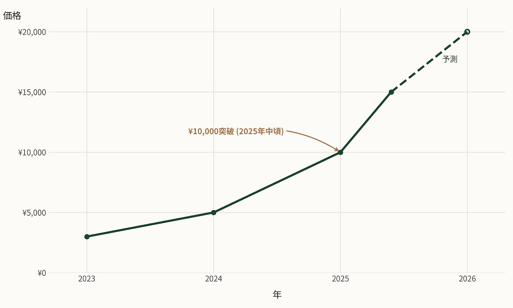
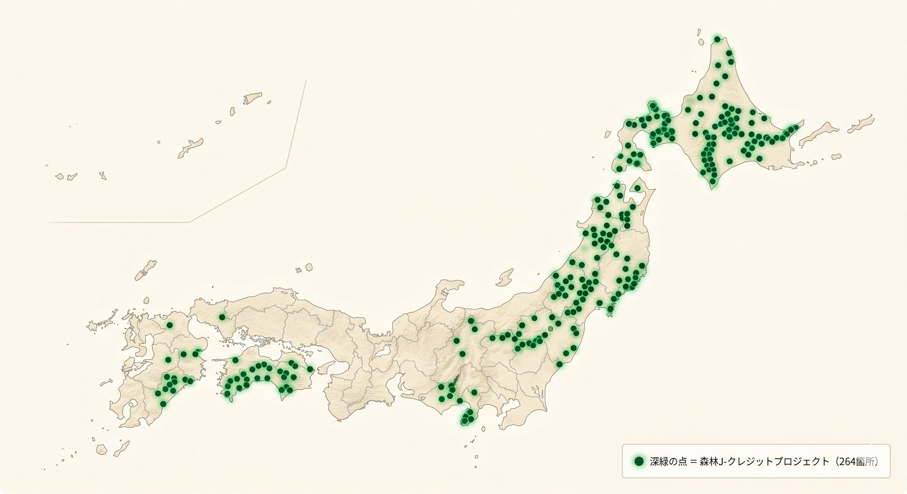

1. 森林由来J-クレジットとは
J-クレジット制度は、省エネ機器の導入や森林管理によるCO₂の排出削減・吸収量を、 国がクレジットとして認証する日本の制度です。 2013年に温暖化対策法の枠組みで始まり、2026年5月現在で 1,500件以上のプロジェクトが登録されています。
このうち、森林管理プロジェクト（樹木の成長による吸収を認証）として登録されているものが 264件（2026年5月時点）あり、もりみえるでは全件を地理情報付きで可視化しています。
省エネ由来クレジットとの違いは以下の通りです。
| 項目 | 森林由来クレジット | 省エネ由来クレジット |
|---|---|---|
| 方法論 | 森林経営活動・植林活動 | ボイラー更新・LED導入など |
| 2026年価格目安 | ¥10,000〜¥15,000/t | ¥2,000〜¥5,000/t |
| 調達難易度 | 高（玉切れ気味） | 中 |
| ストーリー性 | 高い（地域・森林が紐づく） | 低い |
| TNFD/自然資本との親和性 | 高い | なし |
2. 2026年の価格動向
森林由来J-クレジットの価格は、2023年までは¥3,000〜¥5,000/tで推移していましたが、 2024年後半から急騰し、2025年中盤に1t-CO₂あたり¥10,000の心理的節目を上抜けしました。 2025年後半には¥15,000/t台での約定事例も観測されています。
森林由来J-クレジット 2026年予想価格
¥10,000〜¥20,000 /t-CO₂
2026年度は助走期、2026〜2027年に¥20,000/tに迫る水準への切り上がりが予想されている

価格上昇の背景は以下のとおりです。
- GX-ETS（GX排出量取引制度）の本格運用開始（2026年度）に伴う需要拡大
- TNFD/自然資本開示の本格化により、ストーリー性のある森林クレジットへの選好
- 供給制約：森林由来は新規プロジェクト登録が手続き煩雑で創出スピードが遅い
- 東京商品取引所カーボン市場での価格透明化
3. 全264件の地理分布
もりみえるでは、J-クレジット制度事務局が公表する登録プロジェクト全264件を地理情報付きでデータベース化し、 地図上に表示しています。

地域別の傾向は以下のとおりです。
| 地域 | 件数（概算） | 特徴 |
|---|---|---|
| 北海道 | 約30件 | 大規模国有林・道有林。1件あたりのクレジット量が多い |
| 東北 | 約40件 | 岩手・秋田・福島中心。スギ人工林の経営活動が主 |
| 関東・中部 | 約60件 | 栃木・群馬・長野・静岡が多い。LiDAR整備済みの地域とも一致 |
| 近畿・中国 | 約50件 | 京都・兵庫・岡山が中心 |
| 四国・九州 | 約80件 | 高知・愛媛・宮崎・大分でヒノキ・スギの経営活動が活発 |
4. 購入の4経路
J-クレジットは、以下4つの経路から購入できます。それぞれ価格・最低単位・利便性が異なります。
① 売り出しクレジット一覧
J-クレジット制度事務局の公式ページ。創出者と直接交渉。最低単位は数十t〜。価格交渉余地あり
② 専業事業者
森林由来専門の販売事業者（全国森林組合連合会 FC BASE-M など）。窓口一本化で利便性高い
③ オフセット・プロバイダー
仲介事業者。小単位（1t〜）で購入可能。手数料上乗せだが手間最小
④ 東京商品取引所カーボン市場
2023年4月開設の取引所。価格透明・流動性高いが、森林由来は流通量限定
5. 失敗しないクレジット選び方：5つのチェックポイント
① 創出方法論を確認する
「FO-001 森林経営活動」「FO-002 植林活動」「FO-003 再造林活動」など複数あります。 TNFD ストーリーで使うなら、地域性・施業内容が明確な FO-001 / FO-002 が分かりやすい選択肢です。
② 地理的に「自社と関係する地域」かを確認する
自社工場の上流域、自社員の故郷、自社のサプライチェーン産地などに位置するクレジットを 選ぶと、社内外への説明力が一気に増します。もりみえるの流域マッチングで 「自社工場の上流に該当するクレジット」を抽出できます。
③ 認証期間を確認する
森林由来クレジットは1〜8年単位で認証されます。長期間の認証を持つプロジェクトの方が 「継続的に吸収している森」として説明しやすい傾向があります。
④ MRV（モニタリング・報告・検証）の質を確認する
近年は衛星画像・LiDARなど客観データによるMRVが求められています。 将来的に再認証時に「補強データ」が必要になる可能性も視野に。
⑤ 価格と数量の整合性を確認する
小単位だと割高、大単位だと割安。年間どれくらいのオフセットを行いたいか、社内方針と合わせて検討しましょう。
6. もりみえるで自社上流のクレジットを探す
もりみえるは、住所を入れるだけで (a) 取水域の特定、(b) 上流森林の抽出、 (c) その流域に位置する登録J-クレジット を自動で表示します。 これにより「うちの工場の水を涵養してくれている森林のクレジット」が 購入候補として浮かび上がります。
従来は、購入者が地名から自分でクレジットを探す必要があり、 「自社との地理的な関係」が見えづらい問題がありました。 もりみえるの仕組みは、購入のストーリー性を一段階引き上げます。

7. よくある質問（FAQ）
- Q1. 森林由来クレジットは「グリーンウォッシュ」と見なされないか？
- 方法論に従い適切に認証され、二重計上を避けたうえで適切に開示すれば、グリーンウォッシュには該当しません。むしろ TNFD 時代では、ストーリー性のある森林由来クレジットの方が説明しやすい局面が増えています。
- Q2. 個人でも購入できる？
- はい、可能です。オフセット・プロバイダー経由なら数百円〜数千円から購入できます。ふるさと納税と組み合わせる事例も増えています。
- Q3. 自社のCSR森林をJ-クレジットとして登録するには？
- 所有者またはJ-クレジットの「制度参加者」として、認証機関に申請する必要があります。手続きには1〜2年と数百万円の費用がかかるため、小規模プロジェクトはプログラム型登録（複数を束ねる）が現実的です。
- Q4. 価格高騰はいつまで続く？
- 2026〜2027年は供給制約が続くため、上昇基調が予想されます。中長期では、新規プロジェクト登録の効率化（衛星MRVの導入など）によって供給が増え、価格は安定化に向かう可能性があります。
- Q5. もりみえるは取引仲介もしている？
- 仲介・取引は行っていません。透明な情報提供と地理可視化に特化しています。購入は上記4経路をご利用ください。
8. 参考文献・出典
- J-クレジット制度事務局「売り出しクレジット一覧」
- 林野庁森林利用課「森林由来J-クレジットの創出・活用の促進について」（令和6年12月）
- Carbonlink Research「J-クレジット価格の推移と2026年以降の見通し」
- 全国森林組合連合会 FC BASE-M（Forest Credit Base Market）
- 東京商品取引所 カーボン・クレジット市場
最終更新：2026年5月17日。価格情報は記事公開時点の市場観測値であり、変動します。